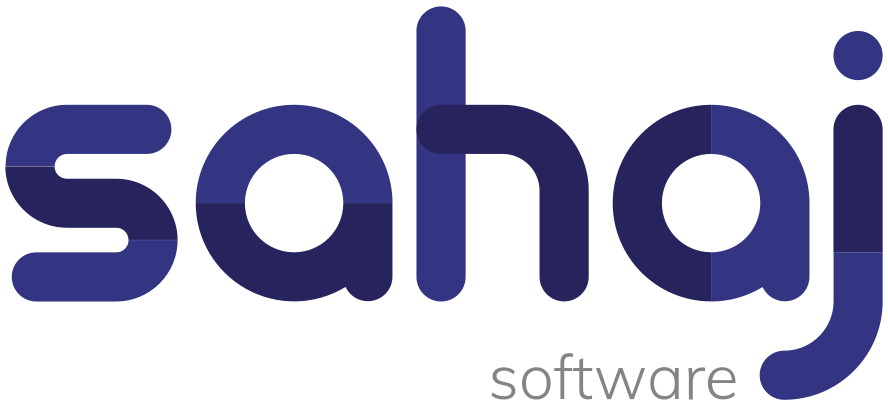
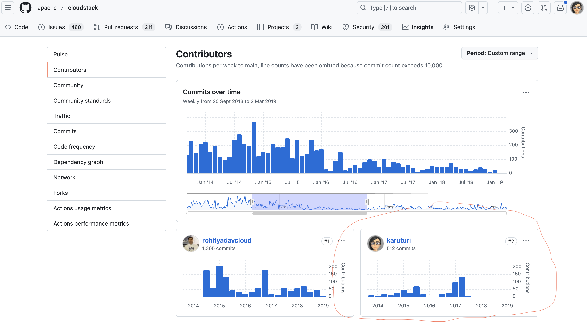
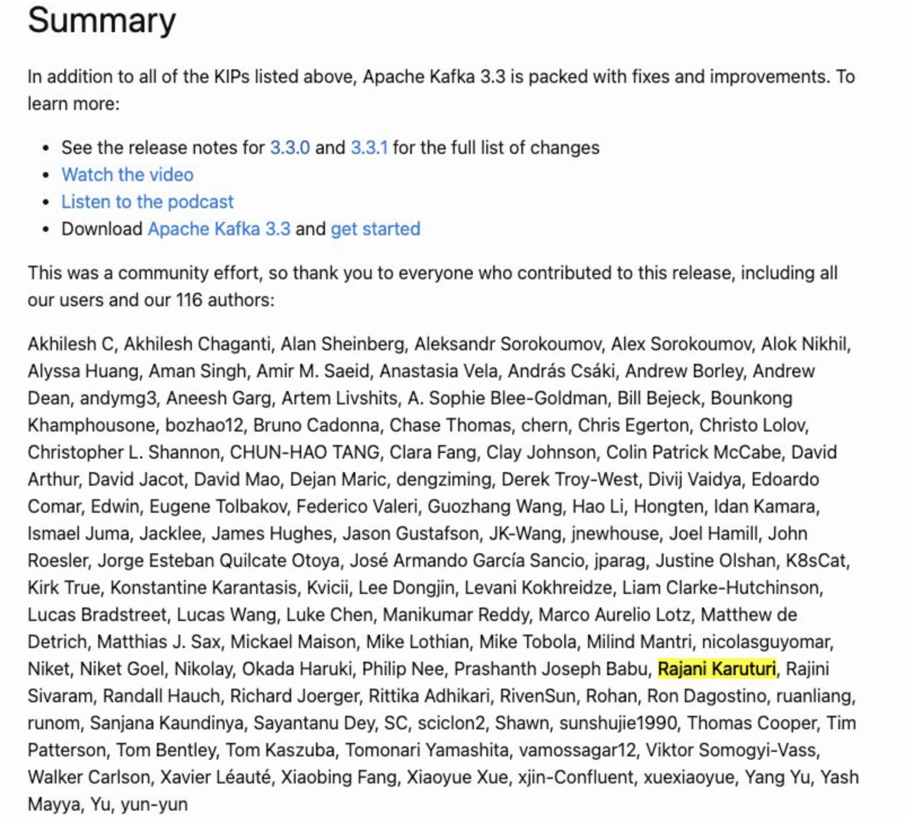
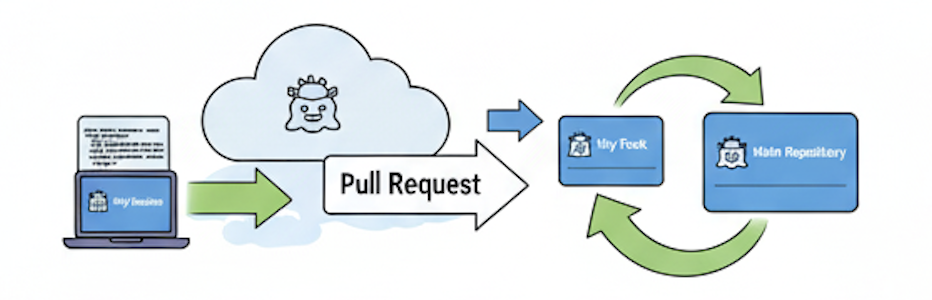
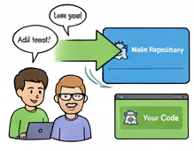
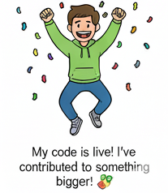
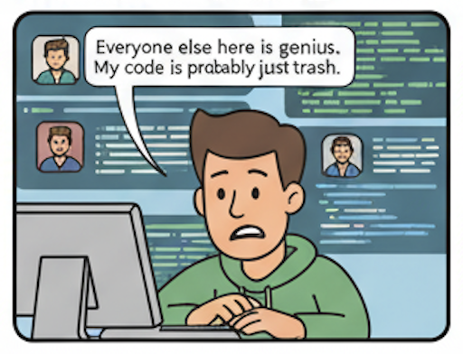

Diving into the World of
Open Source
By Rajani Karuturi
https://tinyurl.com/devday-os
About Me
- B.E.(Hons.) Computer Science
-
Solution Consultant

- Committer and PMC Member, Apache CloudStack
-
Find me on
 GitHub
LinkedIn
GitHub
LinkedIn


Other Contributions
- Learning Kotlin - github:exercism/kotlin/commits?author=karuturi
- Kotest Issue - github:kotest/kotest/commits?author=karuturi
- Obsidian-Excalidraw Issue - github:zsviczian/obsidian-excalidraw-plugin/issues/1408
- Excalidraw Issue - github:excalidraw/excalidraw/issues/7320
- TablePlus Issue - github:TablePlus/TablePlus/issues/3605
What is Open Source?
Software for which the original source code is made freely available and may be redistributed and modified.
An Analogy: The Recipe
Closed Source
A secret recipe. You can buy the cake, but you can't see how it's made or improve it.
Open Source
A recipe shared with everyone. You can use it, tweak it, and share your improved version.
Popular Open Source Projects We Use
- Operating Systems: Linux (Ubuntu, Fedora), Android
- Browsers: Mozilla Firefox, Chromium
- Development Tools: VS Code, Git, Docker
- Databases: PostgreSQL, MySQL
- Web Servers: Apache HTTP Server, Nginx
- Programming Languages: Python, Java, JavaScript, Go, Rust
- Frameworks: React, Angular, Vue.js, Spring, Django, Flask
- Cloud Native: Kubernetes, Prometheus, Grafana
The History and Philosophy
A Brief History
-
Richard Stallman (GNU): Started the free
software movement in 1983 with the GNU Project.
Goal: create a completely free operating system. - Linus Torvalds (Linux): Created the Linux kernel in 1991 and released it under the GPL.
- The combination of GNU tools and the Linux kernel created the GNU/Linux operating system we know today.
Why Do Companies Open Source?
- Build an Ecosystem: e.g., Google with Kubernetes, Meta with React. Creates a standard that drives adoption of their other products.
- Commoditize a Layer: Make a non-core part of their business (like a database or OS) free to focus on their unique value proposition.
- Attract Talent: A strong open source presence is a powerful recruiting tool for engineers.
- Transparency & Security: More eyes on the code can lead to better security and trust.
"Free" vs "Open" - It's Complicated!
Not all free software is open source, and not all open source projects are equally open to collaboration.
What does Free mean?
- Free of Cost: Like Google Chrome. You can download and use it for free, but you can't see or modify the source code.
- Free as in Freedom: The "Free Software" movement's goal. It's about your freedom to run, study, share, and modify the software.
Open Source isn't always the same
- Truly Collaborative: Many projects (like Linux or Apache projects) welcome community contributions.
- Source Available, but Controlled: Android (AOSP) is open source, but its direction is tightly controlled by Google, and contributing to the core is very difficult.
Open Source Licences
What are Open Source Licenses?
- Legal documents granting usage, modification, and distribution rights.
- Ensure software remains "open" while protecting authors.
Permissive Licenses (e.g., MIT, Apache 2.0)
- Allow broad use, modification, distribution.
- Require attribution.
- Compatible with proprietary software.
Copyleft Licenses (e.g., GPLv3)
- Derivative works must use same license.
- Promote software freedom.
- More restrictive for proprietary integration.
License Compatibility
You can't just mix and match all licenses!
Permissive licensed code (e.g. Apache 2.0) can be used in a copyleft project (e.g. GPLv3), but GPLv3 code often can't be used in a proprietary or permissive project.
Contributor License Agreements (CLAs)
- What is it? A legal document some projects (especially large corporate or foundation-led ones) require you to sign before contributing.
- Why? It gives the project a license to your contribution, protecting them from future legal issues and ensuring they can relicense the code if needed.
Real-World Examples
- Linux Kernel: GPLv2 (Strong Copyleft)
- Kubernetes: Apache 2.0 (Permissive)
- VS Code: MIT (Permissive)
- React: MIT (Permissive)
- PostgreSQL: PostgreSQL License (Permissive)
Open Source Governance Models
How are projects run? How are big decisions made?
BDFL (Benevolent Dictator for Life)
- A single person has the final say on project decisions.
- Ensures a consistent vision and quick decision-making.
- Examples: Linus Torvalds for the Linux Kernel, Guido van Rossum (formerly) for Python.
Foundation / Meritocracy
- A committee or foundation governs the project. Decisions are often made by consensus.
- Roles and responsibilities are earned through contributions (meritocracy).
- Examples: The Apache Software Foundation (ASF), The Linux Foundation, Eclipse Foundation.
- I'm a Project Management Committee (PMC) member at Apache CloudStack, which follows this model.
Corporate-Led
- A single company ultimately controls the project's direction and development.
- Often started as an internal project that was later open-sourced.
- Examples: Google with Go & Kubernetes, Meta with React, Microsoft with VS Code.
Why Governance Matters
- It affects how you contribute and how your feedback is received.
- It determines the project's long-term direction and evolution.
- It influences who has the power to make key decisions.
The "Business" of Open Source
How does anyone make money with free software?
How to Fund Open Source
- Support & Services: Sell professional support, training, and consulting (e.g., Red Hat's model for Linux).
- Open Core: The core product is free, but advanced features or enterprise-grade tools cost money (e.g., GitLab, Docker, Elastic).
- SaaS (Software as a Service): The code is open, but a managed, hosted version costs money (e.g., WordPress.com vs. WordPress.org).
- Donations: Direct support from individuals and companies via GitHub Sponsors, Open Collective, etc.
The Sustainability Challenge

source: https://xkcd.com/2347/
Many critical open source projects are maintained by a small number of unpaid volunteers.
Open Source and Your Career
Your GitHub Profile is the New Resume
- It's a real-time portfolio of your work, reviewed by professionals.
- Demonstrates your ability to collaborate, use Git, and navigate complex codebases.
- Shows initiative and passion for your craft beyond coursework or a 9-to-5 job.
Learning in Public
- Want to learn a new technology like Go or Rust? Contribute to a project that uses it!
- You get free code reviews from experts in the field. This is one of the fastest ways to improve.
- Forces you to write clean, understandable code.
- Free licenses for premium tools like IntelliJ IDEA, enabling to build better software
Networking and Mentorship
- Build professional relationships with senior developers from top companies around the world.
- These connections can lead directly to mentorship opportunities and job offers.
Building a Personal Brand
- You can become a known expert in a specific niche (e.g., "the person who knows the Apache CloudStack storage layer").
- This can lead to speaking opportunities, consulting gigs, and job offers.
Structured Programs
Great for students and beginners to get started with a stipend!
- Google Summer of Code (GSoC): A global program focused on bringing more student developers into open source software development.
- Outreachy: Provides internships in open source and open science to people subject to systemic bias and impacted by underrepresentation in the technical industry.
How to Get Started?
Learn the basics of git and GitHub
you can start with this video, if you don't know where to start
Finding Your First Bug
Many organizations have special labels for issues that are great for new contributors.
Factors to Consider
- Personal Interest: Pick a project you care about or use.
- Project Health: Active development, regular updates, responsive maintainers.
- Community: Welcoming, supportive, diverse contributors.
- Technology Stack: Familiarize with languages and frameworks.
Adhering to Contribution Guidelines
- Understand Project Rules: Carefully read the `CONTRIBUTING.md` or similar documentation to understand coding standards, commit message conventions, and pull request processes.
- Local Setup & Reproduction: Set up the project locally, run the application, and ensure you can reproduce the issue or verify the feature you intend to work on.
The Contribution Workflow
It might seem daunting at first, but it's a straightforward process.

1. Fork the Repository
Create a personal copy of the project on your GitHub account.
2. Clone Your Fork
Download the repository to your local machine.
git clone https://github.com/your-username/project-name.git
3. Create a New Branch
Create a separate branch for your changes. This keeps your work organized.
git checkout -b my-awesome-feature
4. Make Your Changes
Fix the bug or implement the new feature.

5. Commit and Push
Save your changes and upload them to your fork on GitHub.
git add .
git commit -m "feat: Add my awesome feature"
git push origin my-awesome-feature
6. Create a Pull Request
Propose your changes to the original project. This opens a discussion with the project maintainers.
7. Review & merge
Maintainers review the code and merge.

8. Happy Developer
Your code goes live!

Testing Your Contributions
Why Tests are Crucial
- Ensure changes work as expected.
- Prevent regressions.
- Provide usage examples.
- Build maintainer confidence.
Types of Tests
- Unit Tests: Individual components.
- Integration Tests: System components working together.
- End-to-End Tests: Simulate user scenarios.
How to Approach Testing
- Follow existing test patterns.
- Write failing tests *before* code (TDD).
- Run full test suite.
Effective Communication in Open Source
Don't be afraid of feedback on your PRs. It's a learning process.
Clear and Concise Language
- Be specific; avoid jargon.
- Use proper grammar and spelling.
Respectful and Patient Interactions
- Maintainers are volunteers; be patient.
- Assume good intent; constructive criticism only.
Utilizing Communication Channels
- Issue Trackers: Bugs, features, specific tasks.
- Pull Request Comments: Feedback on code changes.
- Mailing Lists/Forums: Broader discussions, announcements.
- Chat (Slack/Discord): Real-time discussions, quick questions.
Bad vs. Great Pull Requests
A "Bad" PR 👎
- Vague title like "Fix bug"
- No description
- No link to an issue
- Failing tests
- Mixes multiple concerns
A "Great" PR 👍
- Clear, descriptive title
- Detailed description of the "what" and "why"
- Links to the issue it resolves
- All tests are passing
- Includes documentation updates
The Role of Maintainers
What Do Maintainers Do?
- Review code (Pull Requests).
- Guide project vision.
- Manage issues and features.
- Ensure code quality.
- Foster community.
Working with Maintainers
Remember, most maintainers are volunteers and have other full time job.
- Be responsive to PR feedback.
- Understand their responsibilities.
- Clearly explain changes.
- Be open to suggestions.
Beyond Code Contributions
Documentation
- Improve READMEs, wikis, and API documentation.
- Write tutorials or examples.
- Translate documentation into other languages.
Design and UI/UX
- Create logos, icons, or other visual assets.
- Suggest improvements to the user interface or experience.
- Help with front-end development.
Community Support
- Answer questions on forums, chat, or Stack Overflow.
- Help new contributors get started.
- Organize events or meetups.
Bug Triaging and Reporting
- Verify reported bugs.
- Reproduce issues and provide clear steps.
- Suggest potential solutions or workarounds.
Don't Suffer from Imposter Syndrome
Everyone was a beginner once. The open source community is generally very welcoming.

Live Demo using AI(Gemini CLI)
Let's find a real "good first issue" and fix it.
- Choose an open-source project.
- Read through the open issues.
- Pick a "good first issue".
- Use Gemini CLI to understand the code and fix the issue.
Questions?
Thank You!
Now go forth and contribute!
Start your open source journey today!